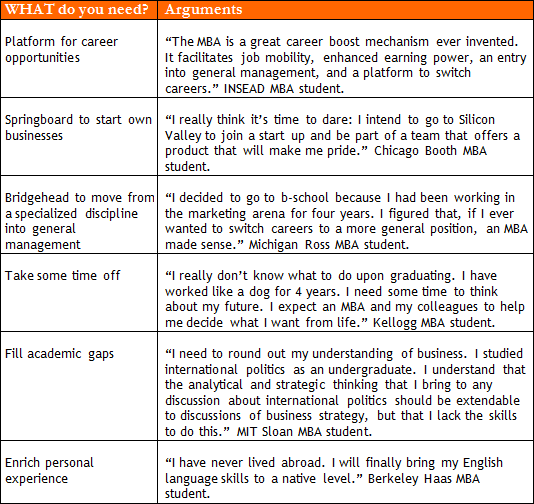

Well… truth is I wonder if I have chance of admissions.
First, it is important to know the profile of those admitted.
Wow, it would be great to have that info.
Can I suggest an exercise before you get to the conclusion whether or not you have the so-called “right profile” of an MBA applicant?
Of course.
Have you taken the "4 Heroes Profile Test"?
The test that is in the INTRO of the site? Yes, I have.
What was the result? With which of the 4 Heroes did you find more empathy?
It was “David, The Innovator.”
Did you agree with the resulting profile?
Reading the description of each… hum… hum… in a way, yeah, I agree that my attitudes are more like those of “David, The Innovator”, but I also share a few traits of “Sophia, The Conductor.”
Great, now I would like you to read those heroes’ testimonials on why they need an MBA in their lives. It will take you no longer than 4 minutes to read the testimonials. See: 4 Testimonials – WHY MBA.pdf.
Ok. Wait a second.
(4 minutes later) So, how did you like the Heroes’ testimonials on WHY they need an MBA?
To be honest, I felt surprised by what they said.
How come?
I found their answers too sophisticated. I thought they would come up with… hum… more pragmatic, concrete reasons, I would say.
Like what?
I don’t know, but I wouldn’t expect anyone to say, “Look I need an MBA, because I am in a dead-end career path.” Don’t know...wouldn’t they say they’re after a career shift? On the other hand, I thought most would simply say that they need an MBA to broaden their professional horizons, just that.
Nicholas, most people seek an MBA in hopes that they can maximize their potential. A large number of MBA students are looking for a career shift. Some directors of admissions boards recognize that more than half of MBAs intend to do some kind of career change (industry, function, or geography). And…
Sorry for interrupting, but I thought another answer would go as “look, man, it’s more than the opportunity to boost my career, you know, the MBA course will offer me the opportunity to live abroad, to enjoy a memorable personal experience, etc.” And... You know… I bet some like me would say that they want to fill their academic gap. Many have probably never sat in a financial class in their lives.
It is also a common argument.
But, Megaron, after all, what are the most common reasons people offer to justify attending an MBA?
You mean, “WHY do people do an MBA?”
Yeah.
In this kind of questioning, I really believe it is necessary to tell the WHAT and the WHY apart.
Huh?
I will explain. Most applicants, at least early in the process, can articulate WHAT they want, but a few can say WHY they need an MBA. Look in the following Table A - What Do you Need an MBA for?
Table A – WHAT do you need an MBA for?

However, from what I have read, our Heroes do not mention, at least explicitly, any of the arguments above. They discuss… how can I say it? They talked big ideas.
Early in his process, the applicant tends to list quite shallow reasons for pursuing an MBA. The Heroes ran away from that trap. They discuss WHY rather than WHAT. They discuss something more relevant: their sources of MOTIVATION (WHY’s).
Ok. Naturally, the Ad Com knows well enough the WHAT’s.
Exactly, but only few candidates can explain the WHY’s.
There is a subtle difference between “WHAT I want”’ and “WHY I want” something.
I don’t find this difference “subtle”. The WHY’s discuss motivations. And when we say motivations, we mean interests and personal values of an applicant.
What do you mean?
Perhaps most important from day one of your MBA project is to understand that the MBA should not be faced as an end in itself, as a tool to get somewhere, but rather as a transformational JOURNEY. Naturally, those factors are a common concern and goal, but outstanding applicants are those who can show they will enjoy a transformational experience.
The old same story: “it’s all about the journey than the destination”, huh? What you are saying is that I don’t need to repeat what is in the “MBA package” (career opportunities, career shifts, personal experience, blah, blah, blah.)
The great majority lack the understanding of what the program can offer. However, the Admissions Committee will demand that. And you don’t want to say what 99% of the applicants would repeatedly say.
Cool. What is on Table A is something that any MBA student can reach. Nevertheless, not everyone will live a transformational MBA program, right?
That’s true.
Megaron, so you expect me to follow the 42 Steps of “David, The Innovator”, right?
Exactly, but not only David’s. You should also read the other 3 profiles. Cool. If you understand HOW they (with different profiles) solve their conflicts and problems, and WHY they act upon the world in a certain way, you can have more insights to craft your unique story.
Ok.
Now, let’s analyze why “David, The Innovator” wants to do an MBA.
The greatest benefit he seems to want to get from his experience is in intellectually terms.
Yeah, that is true.
Each of the Heroes expects very different outcomes from his or her MBA experience... interesting.
Ok, Nicholas, now that you have understood an applicant’s main motivations to pursue an international MBA, you’re ready to return to your original doubt.
Oh, you mean, “do I have the profile of an applicant to an international MBA?” Do we get to any conclusion yet?
Not yet. We still need to explore the most important question in the entire Megaron Marathon: “Give me ONE example of when you felt you were connecting your ‘career dots’ in accordance with your personal values. What do you want to do upon earning an MBA degree?”
Not easy at all, huh?
Once again, I suggest some reading. Check what the same 4 Heroes wrote about this important theme. See: 4 Testimonials – Post-MBA Position.pdf.
Ok.
(4 minutes later). So, Nicholas, how did you like the Heroes’ testimonials on WHAT they want to do upon MBA graduating?
Now I feel somewhat concerned. Before anything, let me ask you. At the outset of the Megaron Marathon, can your students provide insightful answers to this kind of inquiry about their future?
So do you think their replies were “insightful”? As I said, at the start of the MBA project, just a few candidates (roughly 20-25%) are able to articulate a convincing case for their post-MBA professional paths.
Well, I feel more relaxed to hear that.
Don’t forget, though, that our 4 Heroes were outstanding candidates. They all have incredible self-awareness, which is useful strength in the application process. Not by chance, I’ve chosen them as mentors to my current students.
Megaron, self-awareness… it’s so difficult.
Here goes a DISCLAIMER: at the beginning of the process, my expectation is low. What matters now is to go on trying to understand HOW/WHY best former candidates respond when asked about post-MBA plans. Gradually, without much effort, you will refine through Marathon’s exercises the attributes of your candidacy.
Of course, I agree: it is always good to raise the bar and hear from the highly successful.
Agreed. But, Nicholas, we’re losing focus here. Your question is “I wonder if I have the right profile.”
Exactly.
The applicant will easily show that he has a profile to the MBA if he can easily provide evidence that he will follow a career similar to that described by each of the 4 Heroes in the 42 Km of our Marathon. We may have you change your mind during the Megaron Marathon. In addition, one of advantages of our method is to provide students with opportunities to reflect upon their values. Probing into your inner expectations you will get the chance to make your case more sophisticated.
No problem if I feel lost in terms of career?
I often tell my students that: “you can only find yourself if you are lost”. However, the whole issue is related to being lost, yet with a map in your hands. Actually, I like “lost students”: they are usually more prone to question their assumptions.
Well, thus, to end our chat here, what you’re saying is that I will show that I hold “the right profile” if I have as strong a case as that held by each of the 4 Heroes?
Yes, that is one way to see the whole thing.
OK, last thing: here are three questions that bother me at the beginning of this project:
(01.) What is the minimum number of years of experience necessary to apply for a Top MBA Program in the US? What are the tradeoffs involved in being a young candidate?
(02.) When can we say a candidate is an ‘older applicant’? Why can ‘older applicants’ face difficulties getting acceptance? I would think otherwise - more experience, higher chances to contribute to the class discussions. From what I heard: HBS and Stanford don't appreciate older applicants. Could you say why?
Since those questions are very specific, I would rather answer them separately. Check my answer in the PDF’s below.
01.) Young Applicant.pdf
02.) Older applicant.pdf
02.) Older applicant.pdf